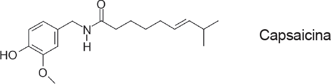

A capsaicina é uma amida lipofílica encontrada em pimentas
do gênero Capsicum, sendo responsável pela ardência
quando se emprega este tempero em alimentos. Ela também
vem sendo empregada para o tratamento de dores crônicas,
por promover a dessensibilização de fibras sensoriais.

Considerando a sua estrutura, pode-se afirmar que a capsaicina:
-
pode ser isolada de extratos brutos de Capsicum empregando
solventes orgânicos de baixa polaridade, como o
n-hexano, e por soluções aquosas ácidas, devido à
basicidade do átomo de nitrogênio presente na estrutura;
-
pode ser isolada de extratos brutos de Capsicum empregando
soluções aquosas básicas, devido à acidez do
grupo fenólico presente na estrutura;
-
somente poderá ser veiculada em formas farmacêuticas
contendo veículos hidrofóbicos devido à sua lipofilicidade.
Está(ão) correta(s), somente, a(s) afirmação(ões)
-
I.
-
II.
-
III.
-
I e II.
-
II e III.